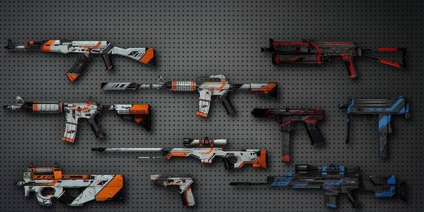

Counter-Strike: Global Offensive
Counter-Strike: Global Offensive (CS:GO) es un videojuego de disparos en primera persona desarrollado por Valve Corporation en cooperación con Hidden Path Entertainment, y es el cuarto juego de la saga Counter-Strike, sin contar Counter-Strike: Online. Fue lanzado al mercado el 21 de agosto de 2012 para las plataformas de Microsoft Windows, Mac OS X y Xbox 360, mientras que sufrió un retraso en PlayStation 3. Posteriormente, la versión para Linux estuvo disponible al público el 22 de septiembre de 2014.
Global Offensive dispuso de una beta accesible únicamente mediante invitación en Steam, en su momento la revista PC Gamer anunció que el videojuego sería lanzado oficialmente el 21 de agosto de 2012 a un precio de € 10,9912, aunque ahora es gratuito. Gracias a esto, su base de jugadores aumentó de 20 a 45 millones, haciendo que retomara su lugar dentro de los juegos más jugados de los últimos años.
Según los desarrolladores, el juego cuenta con la misma mecánica que sus antecesores, aunque con algunos nuevos modos de juego, y no permite la evolución de los personajes gracias a horas de juego (como sucede en los juegos Call of Duty o Battlefield), solamente es necesario ser hábil. Está disponible para Windows, Mac, Linux, SteamOS, Xbox360 y PlayStation 3, Xbox One. La versión para PlayStation 3 soporta DualShock 3, PlayStation Move o teclado y ratón USB.

Características
Personajes
Hay nuevos personajes (terroristas y antiterroristas) y facciones introducidos en CS:GO las cuales son:
Armas
A diferencia de entregas anteriores de la saga Counter-Strike, en Counter-Strike: Global Offensive se usan modelos y nombres de armas reales. Hay varios tipos de armas. En la actualización del 14 de agosto de 2013, se incluyeron los silenciadores y se regalaron la USP-S y la M4A1-S para reemplazarlas por la M4A4 y la P2000. En esta actualización también se añadió la personalización de armas con Skins.
